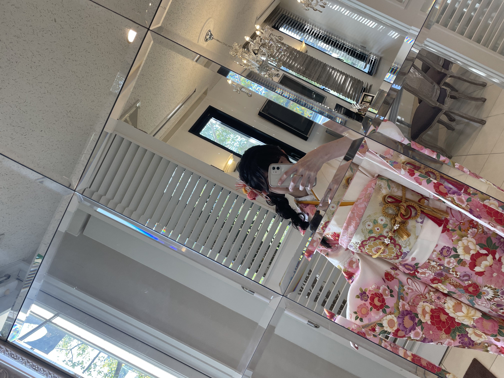

About
Photography
Introduction
Contact

この写真は成人になった記念に振袖の前撮りをした時の写真です。
実際に成人して振袖を着るという特別な瞬間を前に、
家族や友人と共に楽しい時間を過ごしました。
振袖姿に身を包んで、成人の日を祝う準備をする中で、
幼少期からの成長を感じることができました。
この写真は、成人としての新たな一歩を踏み出す前に、自分自身と向き合い、
自信と希望を胸に抱いている様子を切り取った大切な一枚です。
これからの未来に向けて、自分自身を成長させ、
多くの経験を積んでいくことを心から楽しみにしています。